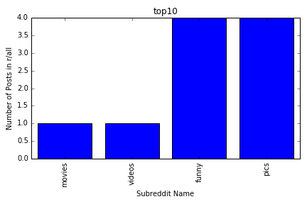
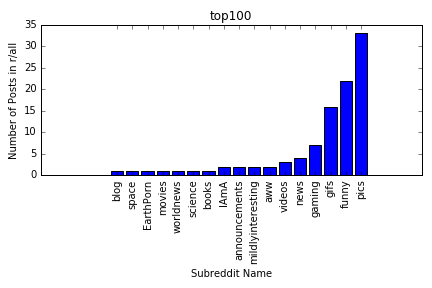
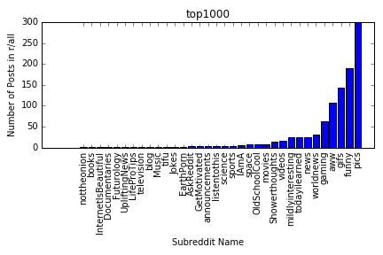
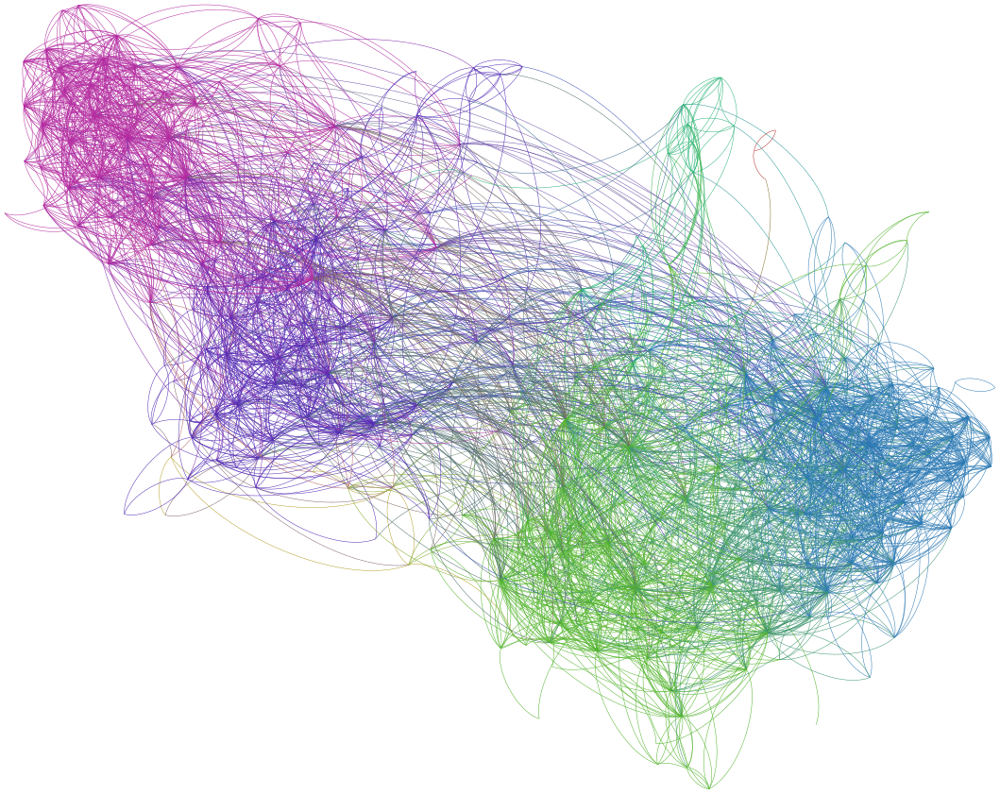

Project Information
Technical Description:
Reddit is a website where people can essentially post anything they want. This can range from pictures, gifs, and even news articles. Since there is such a wide variety of posts on Reddit, people obviously come to the site for different things. Reddit is separated into different communities that all follow a specific theme of posts. For our project, we want to create a network that represents Reddit’s front page. Reddit’s front page is always changing, so we plan to get data from the top posts in one day for one graph and at the same time we will gather data from the top posts of all time. This will provide two different perspectives that we can use to see how connected Reddit’s communities actually are.
Methodology:
Network Model:
We plan to have a bit of a clustered model to visualize the different subreddits present in our data set. This should show which subreddits are closely related and which are not.
Data:
We are using post titles, post karma, and what subreddit a post was posted in. We retrieved this data using the Python Reddit API Wrapper (PRAW). We will connect the posts with each other and hopefully get a graph that shows the interconnectedness of Reddit’s communities.
Network Metrics:
We are interested in the overall connectedness of our graph since we want to visualize how connected the different communities of Reddit really are. So we will look for local bridges, local clusters, nodes with high degrees, and maybe the betweenness centrality of the graph. These connections will show how similar some subreddits are to others. For example, if one subreddit is essentially separated from the rest of the graph, then that suggests that subreddit has niche or very specific content. But if a subreddit doesn’t have many local bridges to others, then it would suggest that is a very popular subreddit with a wide range of content.
Analysis Results:
We are still doing research but here are some interesting bar graphs about some of the subreddits:
Top10 r/all Subreddits Bar Graph:
Top100 r/all Subreddits Bar Graph:
Top1000 r/all Subreddits Bar Graph:
Visualization:
Insert Visualizations and Graphs here:

Nodes in our graph represent posts
Edges in our graph represent similarities between posts like subreddits or submission type
Workspace Setup:
If you are interested in reproducing our analysis, our Jupyter IPython Notebooks can be found on our Github here:
There are sevaral steps and procedures in order to setup our workspace which are detailed on our GitHub above.
Accessing Our Data Sets:
If you are interested in looking at our data sets that we used they can be found on our Github here:
All of this data was collected using PRAW a python wrapper for the Reddit API.
Each data set we use is a JSON file, more information on the data can be found on our Github above.